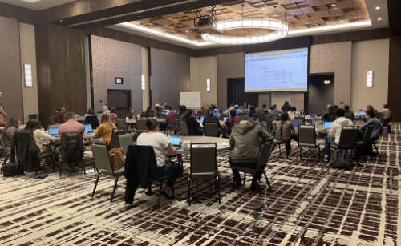

BV-BRC (PATRIC & IRD/ViPR) Workshop at Argonne National Laboratory, July 19-21, 2022¶
{kind=link}

NOTICE:
Dear BV-BRC users, we have reached the limit for the maximum number of in-person and virtual participants for this workshop. Hence, the registration is closed. Please subscribe to the BV-BRC mailing list or follow us on social media to learn about upcoming workshops and webinars.
The BV-BRC (Bacterial and Viral Bioinformatics Resource Center) team will be offering a Bioinformatics Workshop on July 19-21, 2022, at Argonne National Laboratory in the suburbs of Chicago, IL. The workshop will show researchers how to use the new BV-BRC website, which is a merger of the two long running bacterial and viral BRC resources, PATRIC and IRD/ViPR, respectively. The workshop will consist of interactive hands-on training sessions. During the first two days, participants will learn how to search for public datasets of interest and perform genomic, comparative genomic, metagenomic, and transcriptomic analysis using various analysis services and tools at BV-BRC. The third day of the workshop will focus on using command-line interface for programmatic search and retrieval of the data and job submissions, as well as users working with their own data and analysis problems with the help from the BV-BRC team members.
Note: Please note the COVID-19 restrictions and safety guidance currently in place at the Argonne National Laboratory.
All visitors must be fully vaccinated or provide accepted proof of negative COVID-19 test results that are less than 72 hours old.
Face coverings are required, except to the extent necessary to eat or drink when maintaining appropriate physical distance, or when an individual is isolated in an enclosed space.
We will keep the desks at least 6 feet apart from each other at the workshop venue to maintain safe physical distance.
There are outdoor seating areas with gazebos, which can be used during breaks and lunch time. Face coverings may be removed while outside and socially distancing.
LOCATION
AGENDA
Day 1 - Tuesday, July 19
9:00 am Argonne information, BV-BRC registration, Overview (www.bv-brc.org)
9:30 am FASTQ Utilities
* Desription of FASTQ files and service
* Selecting pipeline (Trim, FastQC, Paired read, Align)
* Uploading reads and submitting job
* Viewing and interpreting results
10:30 am Taxonomic Classification
* Description of Kraken2
* Uploading reads or contigs and submitting job
* Saving classified or unclassified sequences
* Viewing and Interpreting the results
11:00 am Break
11:15 am Comprehensive Genome Analysis Service
* Description of assembly and annotation algorithms
* Uploading reads or contigs and submitting job
* Viewing and interpreting results
12:00 pm Lunch
1:00 pm Metagenomic Binning
* Description of algorigthm
* Uploading reads or contigs and submitting the job
* Viewing and interpreting the results
1:45 pm Similar Genome Finder Service
* Description of MASH/MinHash
* Uploading genome sequences, reads or contigs
* Submitting job
* Viewing and interpreting results
2:00 pm Break
2:15 pm Phylogenetic Tree Building Service
* Creating a genome group
* Determining if selected genomes are “treeable”
* Description of algorithm and submitting tree-building job
* Viewing and interpreting results
* Newick file download
3:00 pm Protein Family Sorter
* Description of PATRIC protein families and job submission
* Finding the pan, core and accessory genomes
* Visualizing and manipulating the heatmap viewer
* Finding specific differences, downloading and saving results into private workspace
3:45 pm Proteomic Comparison
* Selecting genomes for a study
* Visualization of compared genomes
* Download and analysis of results
4:30 pm Question and Answer Session and Hands on Work
5:00 pm Day 1 Adjourn
Day 2 - Wednesday, July 20
9:00 am Review of Day 1
9:15 am Metagenomic Read Mapping service
* Uploading reads
* Description of CARD and VFDB
* Submitting the job
* Interpreting the results
9:45 am Comparative Pathways Viewer
* Genome selection and job selection
* Comparing pathways on pathway map and heatmap
* Finding specific differences, downloading and saving results into private workspace
10:15 am Genome Alignment
* Description of MAUVE
* Selection of genomes and job submission
* Viewing the results
10:45 pm Break
11:00 pm SNP and MNP Variation Service
* Description of SNP callers and aligners
* Uploading reads
* Discussion and selection of target genomes
* Viewing and interpreting the results
12:00 pm Lunch
1:00 pm BLAST
* Description of BLAST
* Choosing BLAST database, parameters and job submission
* Viewing and interpreting the results
1:30 pm Primer Design
* Description of algorithm
* Adjusting parameters and job submission
* Viewing and interpreting the results
2:00 pm Break
2:15 pm Multiple Sequence Alignment and SNP view
* Description of algorithm
* Selection of genes and job submission
* Viewing and interpreting the results
2:45 pm Gene Tree
* Description of algorithm
* Selection of data and job submission
* Viewing and interpresting the results
3:15 pm RNA-Seq Pipeline
* Discussion of algorithm and choosing a strategy
* Uploading RNA-seq data
* Selecting genomes and job submission
* Viewing and interpreting the results
4:15 pm Question and Answer Session and Hands on Work
5:00 pm Day 2 Adjourn
Day 3 - Thursday, July 21
9:00 am Command Line Interface
10:30 am Break
10:45 am Job submission via the command line
12:00 pm Lunch
1:00 pm Working on specific use cases and participant data
4:00 pm Final questions
5:00 pm Workshop concludes